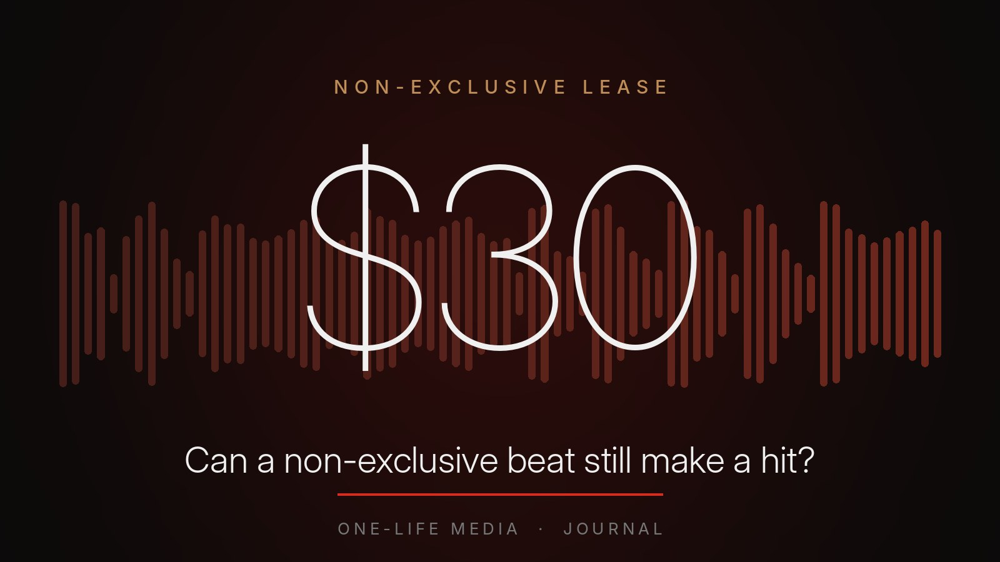

Journal / Beats and licensing
Can a non-exclusive beat still make a hit? Yes. Here's how
By Joseph Wright, One-Life Media and InBlaq Music. 13 November 2026

Lots of artists hold back from leasing a beat because other people can use it too. They wait until they can afford an exclusive, and meanwhile the song never comes out. But one of the biggest records of the last decade was built on a $30 lease.
The $30 beat behind a record-breaking song
A Dutch teenage producer called YoungKio uploaded a trap beat to the online marketplace BeatStars. In late 2018 Lil Nas X bought it on the cheap, non-exclusive option, reported as $30. He recorded "Old Town Road" over it, released it himself and promoted it online.
The song spread on TikTok, he signed to Columbia Records, and the track went on to top the Billboard Hot 100 for a record-setting 19 weeks. The licence didn't stop any of that. What made it work was the song, the idea and the way he pushed it.
It isn't the only example. Blueface's "Thotiana" is widely reported to have started on a leased beat, with exclusive rights negotiated once it took off. That's a common pattern: lease first, upgrade when the song proves itself.
What a non-exclusive licence actually gives you
A non-exclusive licence, often called a lease, gives you the right to record and release one song over a beat, within set limits. The producer keeps ownership of the beat and can license it to other artists too.
A typical lease covers these points:
- Files: a WAV of the full beat, or the WAV plus every stem on a higher tier.
- Stream limit: how many streams your song can earn across all platforms before you need to upgrade.
- Uses: releasing on streaming and download stores, performing live and making a music video.
- Credit and splits: how the producer is credited and how songwriting royalties are shared.
An exclusive licence takes the beat off the market, so no new leases are sold. Leases sold before that usually stay valid until their own limits are reached, which is worth knowing even when you do go exclusive.
Why leasing makes sense for most independent artists
- Your budget goes further. The difference between a £30 lease and a £300+ exclusive can pay for a video, playlist pitching or ads. Promotion usually decides whether a song is heard, not who else holds a licence.
- You can release more. Momentum comes from releasing regularly. Leasing lets you put out more songs and find out which ones connect.
- The risk is lower. Not every song takes off. Paying for an exclusive on a song nobody has heard yet is a big bet. A lease lets the audience tell you which song deserves the investment.
- You can upgrade later. Good producers let you move up a tier and pay only the difference once your song starts growing.
The real risks, and how to handle them
Another artist releases a song on the same beat
This can happen, but listeners connect with your voice, your words and your hook, not just the instrumental. Make the record unmistakably yours:
- Give the song its own title. Never call it after the beat or a "type beat".
- Ask for, or license, stems so your engineer can rearrange the beat. You might drop the drums for an intro, extend the hook or add your own sounds.
- Build a strong vocal identity, such as a memorable hook, ad-libs and harmonies.
YouTube Content ID claims
If a producer registers a beat with Content ID, videos using it can be claimed automatically, even when you've paid for a licence. Before you buy, ask how the producer handles this.
At InBlaq Music, we ask our distributor to keep our licensed beats out of Content ID. If a claim ever does happen, your licence number is proof of purchase and we'll get it released. Keep your licence PDF safe, and put the producer credit in your video description.
Uncleared samples
"Old Town Road" is also a warning. The beat used a sample from a Nine Inch Nails track that hadn't been cleared for commercial use. That had to be sorted out once the song blew up. Always ask whether a beat contains samples, and get a clear answer in writing.
Going over your limits
Watch your streams. If your song is heading for its limit, upgrade before you reach it, rather than after. It's cheaper and keeps everything above board.
Registering your song properly
A leased beat still leads to a real song that earns real royalties. Two things to do:
- Get an ISRC for your recording, usually from your distributor, and release it under your own artist profile. You own the master recording of your song.
- Register the composition with your collection society (PRS for Music in the UK, ASCAP or BMI in the US) using the songwriting split in your licence. The producer registers their share. You register yours for your lyrics and melody.
When to go exclusive
A lease is the right choice for most songs. Consider an exclusive when:
- the song is growing quickly and you're approaching your stream limit;
- a label, publisher or sync buyer is interested and wants clean, exclusive rights;
- it's a lead single you're putting serious money behind;
- you want to be sure no one else releases on that beat from now on.
Quick checklist for leasing a beat
- A written licence with your name, the date, your stream limit and the songwriting split.
- Untagged files delivered straight away, with stems if you can.
- A clear answer on samples.
- A clear Content ID policy, and how claims are handled.
- An upgrade path where you pay only the difference.
- A way to verify your licence if a platform asks.
Thinking about using an AI-generated beat instead? Read why we think human-made beats are still the safer foundation for your song.
Lease a beat from InBlaq Music
Our leases are built around this checklist:
- WAV lease, £30: up to 100,000 streams.
- Stems lease, £75: up to 500,000 streams.
- Exclusive, from £300: unlimited streams, and the beat comes off sale.
Every licence comes as a PDF in your name, with a number anyone can check online. You download straight away, and you can upgrade by paying only the difference. Read the full licence terms or browse the beats.